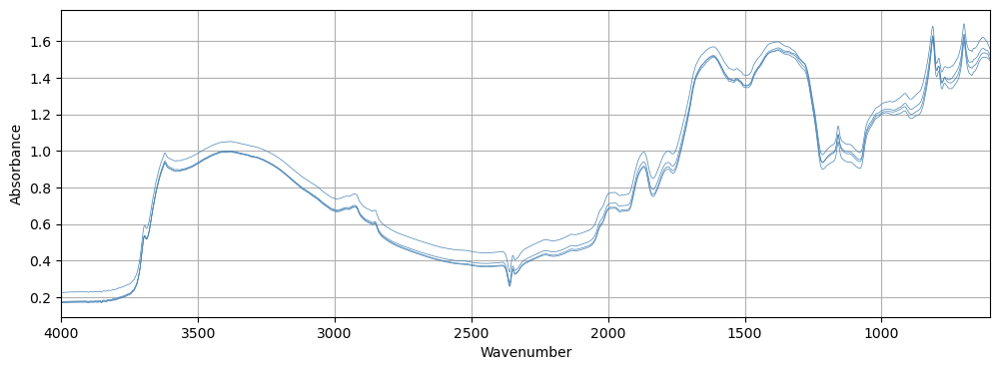
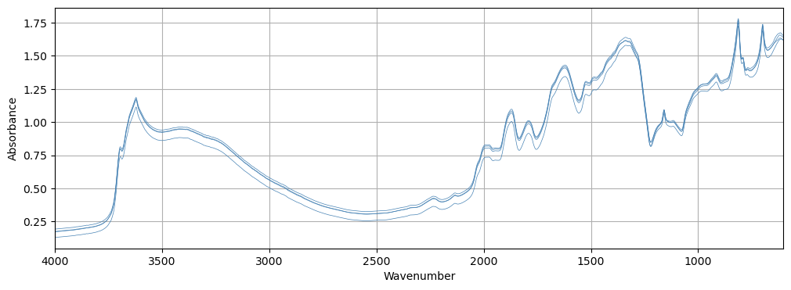
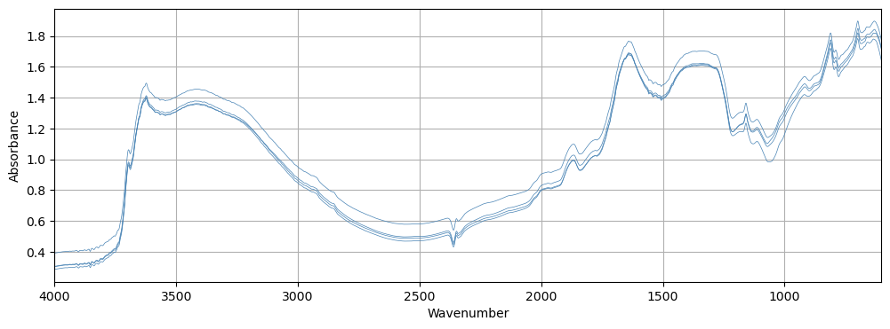
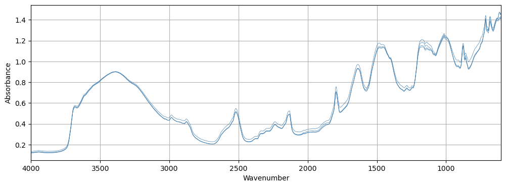
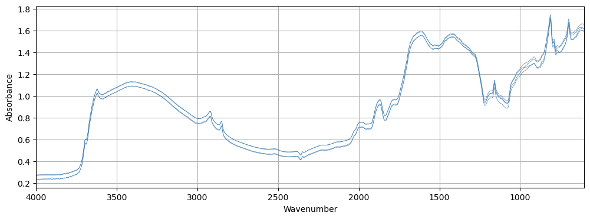

path = Path('../_data/kssl-mirs')KSSL
Various Transforms to be piped to create a DataLoader
Input (spectra)
get_spectra_files
get_spectra_files (x, **kwargs)
Delegates (__call__,decode,setup) to (encodes,decodes,setups) if split_idx matches
get_spectra_files(path.ls()[0])(#4) [Path('../_data/kssl-mirs/180338/260043XS04.csv'),Path('../_data/kssl-mirs/180338/260043XS01.csv'),Path('../_data/kssl-mirs/180338/260043XS02.csv'),Path('../_data/kssl-mirs/180338/260043XS03.csv')]wn = np.arange(4000, 600, -2); wnarray([4000, 3998, 3996, ..., 606, 604, 602])Spectra
Initialize self. See help(type(self)) for accurate signature.
to_spectra
to_spectra (x, **kwargs)
Delegates (__call__,decode,setup) to (encodes,decodes,setups) if split_idx matches
paths = L(Path('../_data/kssl-mirs/180338/260043XS04.csv'),
Path('../_data/kssl-mirs/180338/260043XS01.csv'),
Path('../_data/kssl-mirs/180338/260043XS02.csv'),
Path('../_data/kssl-mirs/180338/260043XS03.csv'))
to_spectra(paths)Spectra([[0.1680, 0.1682, 0.1684, ..., 1.4982, 1.4934, 1.4900],
[0.1742, 0.1743, 0.1745, ..., 1.5318, 1.5263, 1.5215],
[0.1706, 0.1708, 0.1710, ..., 1.5089, 1.5031, 1.4992],
[0.2243, 0.2245, 0.2248, ..., 1.5664, 1.5592, 1.5532]])to_spectra(paths).show()<AxesSubplot: xlabel='Wavenumber', ylabel='Absorbance'>
rand_w_avg
rand_w_avg (x, **kwargs)
Delegates (__call__,decode,setup) to (encodes,decodes,setups) if split_idx matches
tls = TfmdLists(path.ls(), [get_spectra_files, to_spectra, rand_w_avg])
tls[0]Spectra([[0.1915, 0.1918, 0.1920, ..., 1.5329, 1.5270, 1.5222]])Target (Soil properties)
Analyte
Initialize self. See help(type(self)) for accurate signature.
AnalytesTfm
AnalytesTfm (analytes:list|None=None)
Delegates (__call__,decode,setup) to (encodes,decodes,setups) if split_idx matches
encodes
encodes (path:pathlib.Path)
Transform a path to a directory into a tensor of soil analyte(s) measurement
| Type | Details | |
|---|---|---|
| path | Path | Path to directory containing both spectra and analyte(s) measurement |
AnalytesTfm(analytes=[725])(path.ls()[0])Analyte([2.8077])AnalytesTfm(analytes=[725])(path.ls()[0]).show()Analyte([2.8077])# Or as a TfmdLists pipeline
tls = TfmdLists(path.ls(), [AnalytesTfm(analytes=[725]), torch.log10])
tls[0]tensor([0.4484])t = np.array([AnalytesTfm(analytes=[725])(fname).item() for fname in path.ls()])
np.log10(t.min()), np.log10(t.max())/var/folders/9w/q9wj71814bd5m3n9gpmxn1rm0000gn/T/ipykernel_66017/2631844479.py:2: RuntimeWarning: divide by zero encountered in log10
np.log10(t.min()), np.log10(t.max())(-inf, 1.509618744858649)How to use these transforms?
- First create two // pipes (one for the features and one for the targets):
x_tfms = [get_spectra_files, to_spectra, rand_w_avg]
y_tfms = [AnalytesTfm(analytes=[725]), torch.log10]- Create your splits and create a Fastai
Datasets:
splits = RandomSplitter(seed=42)(path.ls())
dsets = Datasets(path.ls(), [x_tfms, y_tfms], splits=splits)- Then you get your Dataloader:
dls = dsets.dataloaders(bs=16)dls.train.one_batch()[0].shapetorch.Size([16, 4, 1700])dls.train.one_batch()[1]Analyte([[-4.8662e-01],
[-4.7290e-01],
[ 4.8377e-01],
[-9.2032e-01],
[-6.1871e-01],
[ 2.9790e-04],
[-1.1769e-01],
[-5.0147e-01],
[-4.6117e-01],
[-2.0003e-01],
[ -inf],
[-9.4657e-01],
[-3.8762e-01],
[-1.2586e-01],
[-1.3596e+00],
[-9.3043e-01]])dls.show_batch(max_n=4)Analyte([-0.1432])
Analyte([0.1770])
Analyte([0.4744])
Analyte([-1.0525])


